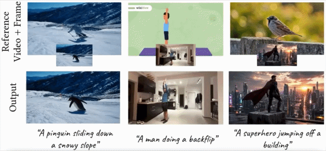
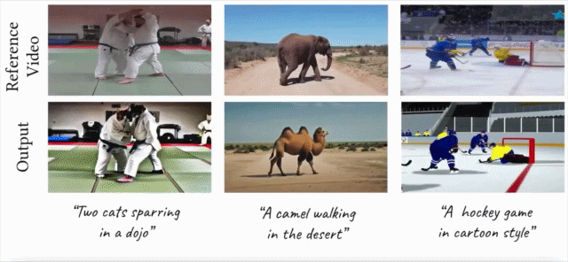
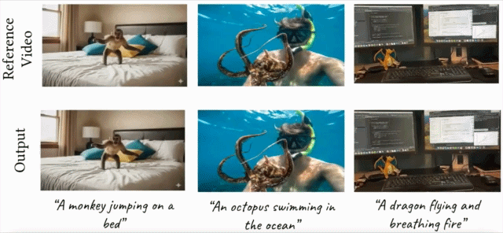
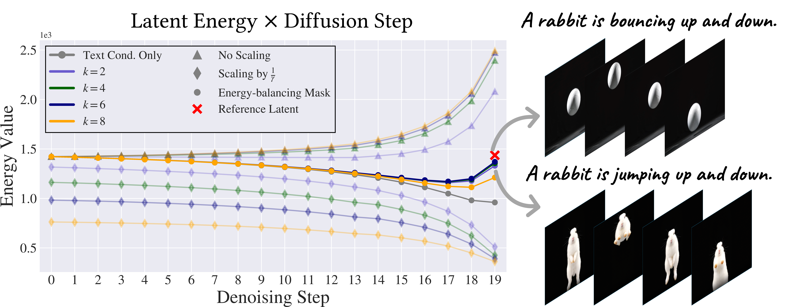

Simple, zero-training video motion control through frequency-domain phase injection into diffusion noise latents.
Applications
I2V Motion Transfer

Motion Transfer (+ Structure Conditioning)

Cut & Drag

Abstract
Latent video diffusion models generate videos by progressively transforming Gaussian noise
into realistic samples conditioned on text or visual inputs. However, existing conditioning
methods often require additional training and computational overhead. Motivated by recent
findings on the importance of frequency components in generative models, we propose a
simple, training-free approach for motion-conditioned video generation by injecting
low-frequency phase information from a reference video directly into the diffusion noise latents.
Our method transfers motion cues without modifying the model architecture or inference
pipeline. Using several applications, we demonstrate effective control over both appearance
and dynamics in generated videos, while achieving competitive or superior results compared
to more complex conditioning approaches.
How Does It Work?
ϕ-Noise operates by decomposing both the reference video latent and the Gaussian noise
latent into the frequency domain via the Discrete Fourier Transform (DFT). The
low-frequency phase components of the noise — which encode coarse spatial
structure and dominant temporal dynamics — are replaced with those from the reference.
A Spectral-Temporal Energy Balancing Mask Φ is then applied to preserve
total signal energy and ensure stable denoising.
ϕ-Noise injects low-frequency phase information from a reference video
into Gaussian noise latents, enabling training-free motion and structural conditioning
across diverse video generation tasks — with no changes to the diffusion model.
Analysis
Phase Substitution & Energy Balancing

Figure 2. Phase and Energy Analysis — phase distributions, latent energy
evolution across denoising steps, and qualitative comparison with/without energy balancing.
Naïve phase injection disrupts the expected energy profile of the noise, causing saturation
artifacts and out-of-distribution denoising. ϕ-Noise applies a frequency-dependent scaling
mask Φ that scales down injected low-frequency magnitudes by
1/γ while compensating by scaling high frequencies by β,
guaranteeing exact energy preservation: E(z̃k ⊙ Φ) = E(z̃).
Because the DFT and its inverse are computationally negligible relative to a single
diffusion step, ϕ-Noise introduces no additional runtime or memory overhead
and requires no changes to the model architecture or inference pipeline.
Comparisons
ϕ-Noise supports three distinct video generation tasks within a single unified framework,
all using WAN (Wan2.2-14B) as the base model with no additional training.
Choose a task from the tabs below.
Given a reference video and a text prompt, generate a video matching the prompt
while preserving input motion dynamics. Spatial ϕ-Noise achieves strong alignment
with both textual content and motion patterns.
Reference
Ours
DMT
DiTFlow
Prompt: "A monkey is climbing a climbing wall."
Reference
Ours
DMT
DiTFlow
Prompt: "A motorcycle is driving on the road."
Reference
Ours
DMT
DiTFlow
Prompt: "A dolphin is jumping in the air into the water."
Align with both a text prompt and a first-frame image condition while following the
motion of the reference video. ϕ-Noise successfully transfers motion across varying
subjects and handles complex dynamics while preserving identity coherence.
Reference
Ours
MotionClone
Wan
Prompt: "The person is performing a backflip."
Reference
Ours
MotionClone
Wan
Prompt: "A motorcycle is driving on the road."
Reference
Ours
MotionClone
Wan
Prompt: "The person is sitting, and then suddenly flies magically."
Reference
Ours
MotionClone
Wan
Prompt: "The shark is swimming in the ocean."
Users cut object patches from an image or add sprites, then animate them with rigid
drag paths. ϕ-Noise generates coherent videos following prescribed motion while
producing plausible non-rigid dynamics (e.g., fire breath, tentacle movement).
Input
Ours
Time-to-Move
Go-with-the-Flow
Input
Ours
Time-to-Move
Go-with-the-Flow
Input
Ours
Time-to-Move
Go-with-the-Flow
Quantitative Results
We evaluate on a diverse benchmark of 60 high-quality videos: 20 from
the TTM dataset, 30 from LOVEU-TGVE-2023, and 10 in-the-wild videos for real-world
generalization. ϕ-Noise achieves competitive or state-of-the-art results at negligible
additional cost.
Model
CLIP-T ↑
Aes ↑
Img ↑
LPIPS-T ↓
Flow-E ↓
Subj-C ↑
Smooth ↑
Dyn-D ↑
Wan-I2V
0.308
0.652
0.644
0.116
181.10
0.942
0.978
0.647
GWTF
0.314
0.620
0.637
0.097
152.81
0.942
0.981
0.647
TTM
0.311
0.647
0.653
0.110
102.39
0.948
0.978
0.705
Ours (ϕ-Noise)
0.313
0.637
0.627
0.171
101.49
0.918
0.964
0.764
ϕ-Noise achieves the best Flow-Error (motion fidelity) and
Dynamics-Degree scores — the two metrics most directly measuring motion
transfer quality — while requiring no additional training.
BibTeX
If you find this work useful, please cite:
@article{abramovich2025phinoise,
title = {ϕ-Noise: Training-Free Temporal Video Conditioning
via Phase-Based Noise Manipulation},
author = {Abramovich, Ofir and Cohen, Nadav Z. and
Rosenthal, Adi and Shamir, Ariel},
journal = {arXiv preprint},
year = {2025},
}